HS HS-EN-08 — Bulk and Chemical Cargo Safety Protocol Management
This process manages the safety protocol for bulk and chemical cargo operations at A.P. Moller-Maersk, ensuring compliance with environmental and quality standards.
🗺 BPMN Process Flow
{kind=link}

Click diagram to zoom & pan • Scroll to zoom • Drag to pan • Download SVG
📋 Process Attributes
| Process ID | HS-EN-08 |
|---|---|
| Domain Family | OPERATIONS |
| L1 Domain | HSSE & Quality Management |
| L2 Process Group | Environmental and Quality Compliance |
| L3 Name | Bulk and Chemical Cargo Safety Protocol Management |
| Trigger | Initiated when a new bulk or chemical cargo shipment is booked and confirmed. |
| Outcome | Successful completion ensures that all safety protocols are followed, reducing risks and maintaining regulatory compliance. |
| Systems | Navis N4 SAP S/4HANA Veson Nautical IMOS CargOPTIMIZER CargoSphere rate management Descartes and MIC Customs |
📋 L4 Process Steps
| Step | Name | Role | System | Input | Output | KPI | Pain Point / Risk | Decision? | Exception? |
|---|---|---|---|---|---|---|---|---|---|
| 1.1 | Cargo Declaration Review | Freight Coordinator | SAP S/4HANA | Cargo booking details | Declaration form | Correct declaration rate 95% | Incorrect declarations can lead to delays and fines. | Y | N |
| 1.2 | Customs Brokerage Coordination | Customs Broker | Descartes and MIC Customs | Declaration form | Customs clearance documents | Clearance time within 48 hours 90% | Delays in customs clearance can cause shipment delays. | N | Y |
| 1.3 | Vessel Readiness Check | Port Captain | Navis N4 | Customs clearance documents | Readiness report | On-time vessel departure rate 98% | Vessel delays can impact overall logistics efficiency. | Y | N |
| 1.4 | Cargo Stowage Planning | Cargo Planner | CargOPTIMIZER | Readiness report | Stowage plan | Efficient stowage rate 90% | Improper stowage can cause stability issues. | N | Y |
| 1.5 | Environmental Compliance Check | Vessel Master | Synergi Life HSSE | Stowage plan | Compliance report | Compliance rate 99% | Non-compliance can lead to fines and reputational damage. | Y | N |
| 1.6 | Voyage Management | Chief Officer | Veson Nautical IMOS | Compliance report | Voyage plan | On-time arrival rate 95% | Late arrivals can disrupt supply chains. | N | Y |
| 1.7 | Maintenance Planning | Port Captain | SHIPNET and Amos ABB | Voyage plan | Maintenance schedule | Scheduled maintenance adherence 98% | Equipment failures can cause delays. | Y | N |
| 1.8 | Quality Control Inspection | Operations Manager | SAP S/4HANA | Maintenance schedule | Inspection report | Defect rate below 2% | High defect rates can impact cargo safety. | Y | N |
| 1.9 | Trade Lane Optimization | Trade Lane Manager | CargoSphere rate management | Inspection report | Optimized trade lane plan | Cost savings 5% | Inefficient routing can increase costs. | N | Y |
| 1.10 | Final Compliance Review | Vessel Master | SAP S/4HANA | Optimized trade lane plan | Final compliance certificate | Overall compliance rate 97% | Non-compliance can lead to legal issues. | Y | N |
| 1.11 | Documentation and Reporting | Claims Handler | SAP S/4HANA | Final compliance certificate | Compliance documentation | Complete documentation rate 95% | Incomplete documentation can cause legal complications. | N | Y |
| 1.12 | Post-Voyage Review | Port Captain | Navis N4 | Compliance documentation | Review report | Continuous improvement rate 80% | Lack of continuous improvement can lead to recurring issues. | Y | N |
📊 KPIs & Risk Register
KPIs
Correct declaration rate 95% Clearance time within 48 hours 90% On-time vessel departure rate 98% Efficient stowage rate 90% Compliance rate 99% On-time arrival rate 95% Scheduled maintenance adherence 98% Defect rate below 2% Cost savings 5% Overall compliance rate 97% Complete documentation rate 95% Continuous improvement rate 80%
Key Risks
Hazmat misdeclaration causing vessel fire risk Delays in customs clearance can cause shipment delays Vessel delays can impact overall logistics efficiency Improper stowage can cause stability issues Non-compliance can lead to fines and reputational damage Late arrivals can disrupt supply chains Equipment failures can cause delays High defect rates can impact cargo safety Inefficient routing can increase costs Non-compliance can lead to legal issues Incomplete documentation can cause legal complications Lack of continuous improvement can lead to recurring issues
Swim Lanes
Freight Coordinator · 1.1, 1.2 Customs Broker · 1.2 Port Captain · 1.3, 1.7 Cargo Planner · 1.4 Vessel Master · 1.5, 1.10 Chief Officer · 1.6 Operations Manager · 1.8 Trade Lane Manager · 1.9 Claims Handler · 1.11